Fishing For Pike: "Spinning," "Live-Baiting," And "Paternostering". Continued
Description
This section is from the book "Fishing", by Horace G. Hutchinson. Also available from Amazon: Fishing.
Fishing For Pike: "Spinning," "Live-Baiting," And "Paternostering". Continued
24.- Chertsey Bridge.
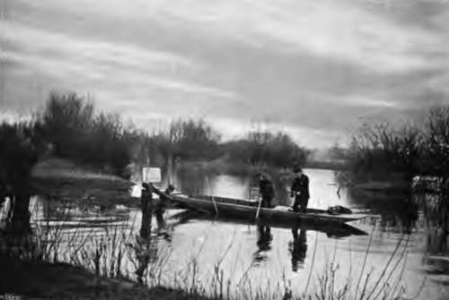25.- Live-Bait "Snap" Fishing.
The last, and possibly the best "artificials" I shall mention, are " phantom-baits " ; they are made in various sizes and colours, of silk, also of sole skin, are capital pike slayers, especially the " Blue-phantoms," though rather expensive baits for pike-fishing. The late Mr. Francis Francis had a great opinion of these lures for fishing Scotch rivers and lochs. Once-it's years ago-with the permission of the Earl of Breadalbane, he was spinning for pike in Loch Tay, and captured a fine salmon on his " phantom-bait." The Earl was entertaining some guests; but the keepers, who had tried with rod, failed to catch a salmon, and the net-fishings had closed. They told Francis there would be no " fish " for dinner at Loch Tay Castle; so he sent his salmon as a present to the Earl, who told his guests how thoughtful it was of Francis to have done so. At dinner, the only clergyman present (an Irish priest) was requested to say "grace." He complied thus:-
" God bless Loch Tay, which I've heard say, the region of romance is;
God bless the Earl of Breadalbane, and God bless Francis Francis.
1 Invented by the author of these chapters.
God bless the rod, the reel, and line, also the phantom-spinner,
And bless the fish which left his Tay (iea)' to come to our dinner.
For live-bait fishing with "snap-tackle," it will be found best to use the shortest top-joint. The line may be similar, but a trifle thicker, than that used for spinning, and the reel should be forge enough to contain 100 yards of line, as very large pike are often hooked when live-bait fishing, and require considerable " tether " while playing them. The trace should be about three feet long, of stout salmon-gut, or three strands of trout-gut twisted together and tapered-whichever is preferred should be stained. At the bottom end of the trace is looped the lead to sink the bait, above which the pike-float is placed on the line, to keep the live-bait suspended and swimming at a proper depth below the surface of the water. Live-bait leads and floats can be obtained at any tackle-shop. Of floats, the best are the " Fishing Gazette pike floats " and the " Duplex"; the latter have two interchangeable tops, the red top is for use on bright days, or in the foam-flecked waters of weirs, where white would not be visible; on dull days, or as the evenings close in, the white top would show best. The " Archer-Jardine " detachable leads, and my " perfected barrel-leads," have for years been favourites with pike anglers.
The next consideration is the 14 snap-tackle." Some anglers prefer 44 Pennells," others the " Bicker-dyke" snap-both are excellent. About 1875, I introduced new snap-tackles, with which some of my largest pike were killed. Since then, I have improved them; one alteration is in the small hook being made rather longer, which is to be inserted in the top corner of the bait's gill-cover, and not in the base of its pectoral fin, for just there is the fish's heart; if placed there, baits soon get exhausted and die. These tackles are known as Jardine's 44 Perfected Snaps," and are obtainable at Farlow's, Carter & Company, Peek & Son, and some of the best provincial tackle-shops, but inaccurate imitations of them are sold.
A bait-can will be required, in which to keep the dace and gudgeon alive. Those with an interior can of perforated zinc to lift out are very convenient, and these inner cans may be withdrawn, and placed in the river to freshen up the baits. Cans with an air-pump for aerating the baits, known as "Field's aerating bait-cans," can be obtained at most of the London tackle-shops.
We will suppose ourselves equipped, and eager to commence snap-fishing. We select a bright, lively dace, and carefully placing it on the snap-hooks as described, and the smaller hook of the larger triangle through the base of the bait's back fin, we next adjust the float so that the live bait shall swim just below mid-water, then drawing a dozen yards or so of line off the reel, and the bait up towards the rod-top, with a gentle swing of the rod we cast the bait quietly in the water, at the upper part of a sedge-fringed pool, paying out more line if necessary, but holding the bait for a minute or two here and there, in the likely places to harbour a pike.
Suddenly the float disappears. We gather up the slack line, smartly lift the rod-top, and " drive home the steel"; when, from the swirl in the water and the impetuous plunge of the pike, we know that we have hooked a heavy fish, which must be played on as " tight a rein " as is prudent, of course giving and recovering line, as the pike dashes desperately here and there in its efforts to escape, until it is gaffed, or in the landing-net. Having disturbed the pool, we will go farther down the river, where, near a bed of water-lilies-a capital place for pike-we will fish with " paternoster." For this we use our longest top-joint, and to our line attach 4 feet of salmon-gut, stained to the colour of weeds. At the end of our gut-trace we fix a ¾-oz. pear-shaped plummet, and 16 inches above it tie a loop, to which we attach a single No. 10 square-bend paternoster hook, on 12 inches of platinum-gimp. The bait-a 5-inch dace or large gudgeon-should have the hook carefully passed through the bottom lip first, and then the top lip (the baits live longer when thus hooked), then cast the bait quietly near to lily-pads, weeds, or into deep eddies, lift it gently, then let it sink again, and draw it through all the water likely to hold a pike, the line all the while being gathered on to the left hand, or on the reel, and kept moderately "taut." It will be known when a fish is found by the bait being arrested, perhaps tugged at and shaken; then wait a few seconds, strike smartly, and play your pike to the gaff or landing-net.
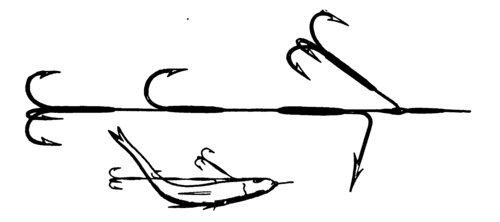Fig. 3.- Farlow Registered Flight. - The Gimp 12 Inches Long.
Fig- 4.- Jardine's Indiaruiwer Convolute Pike Bait.
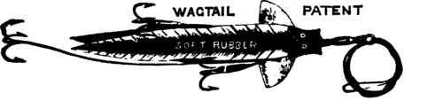Fig. 5.- Wagtail Bait (Patent).
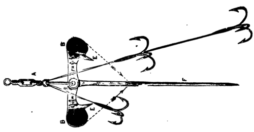Fig. 6- Archer Spinner
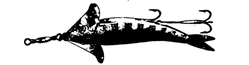Fig. 7.- Archer Spinner, Baited.
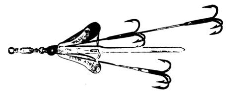Fig. 8.- Abbey Mills Spinner.
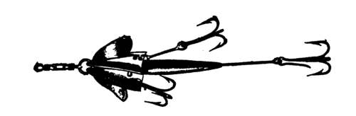Fig. 9.- Allcock's A1 Spinner.
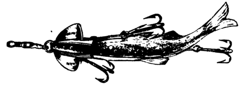Fig. 10 - A1 Spinner, Baited.
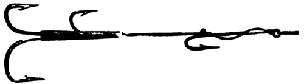Fig. 11 - Pennell's Live-Bait Snap Tackle.
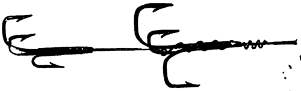Fig. 12.- Jardine's Perfected Snap Tackle.
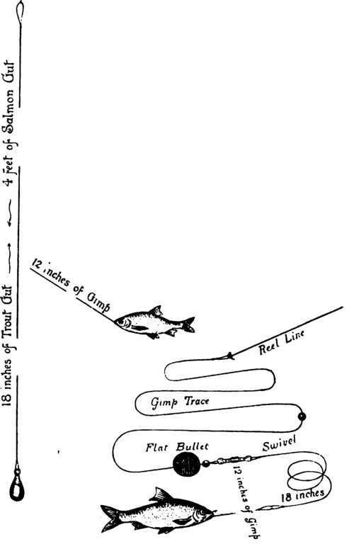Fig. 13. Pike "Paternoster" Tackle.
Fig. 14.-leger-Tackle Baited With Live Dace Or Roach.
"Paternoster" And Leger Tackle.
" Legering " for pike is only adopted when rivers are very much discoloured after heavy rains. A circumstance which occurred to me in January 1875, when fishing at Sonning-on-Thames, in a high flood and very thick water, may be interesting to my readers who are anglers. I will give " Red Spinner's "1 account of it:- w During the high floods that occurred in the Thames Valley during the week succeeding the New Year (1875), the pike-fishers were completely nonplussed. One well known amongst them went up the river as soon as there seemed to be a prospect of success, and found the water, to his disgust, in colour and consistency not unlike pea-soup. All his efforts were unsuccessful till luncheon-time, then he moored his punt in a position commanding a deep, quiet eddy. He discarded the ordinary method of live-baiting, and by affixing a perforated bullet on the trace, a yard above the hook, he improvised a leger-tackle. The result justified his choice of both place and method. His live-bait, large dace, and the yard of free-trace below the bullet, gave them an opportunity of pirouetting in a pretty wide circle. The angler had, fortunately, 1 struck ile.' The eddy of his choice happened, no doubt, to be the furnished apartments into which a large family of pike had been driven by stress of water, and the baits dropped into their midst like manna in the wilderness. Their pikes hips, one after another, simply opened their jaws and absorbed the treacherous dace, taking things ridiculously easy until they felt the steel'; then running madly, they gave splendid sport. I saw the fish, beautifully shaped and marked. In one lucky hour the angler caught six pike, the largest of them 13 j lbs., 10 lbs., 9 lbs., and 8£ lbs., the total weighing 49lbs."
1 Mr. William Senior, vide M Waterside Sketches."
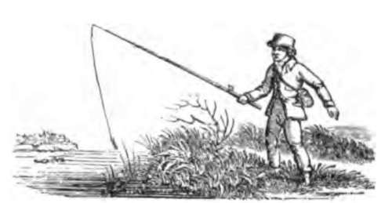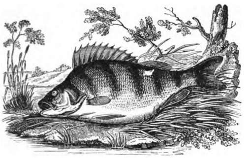
Continue to:
- prev: Chapter XI. Fishing For Pike: "Spinning," "Live-Baiting," And "Paternostering"
- Table of Contents
- next: Chapter XII. The Perches (Percides)